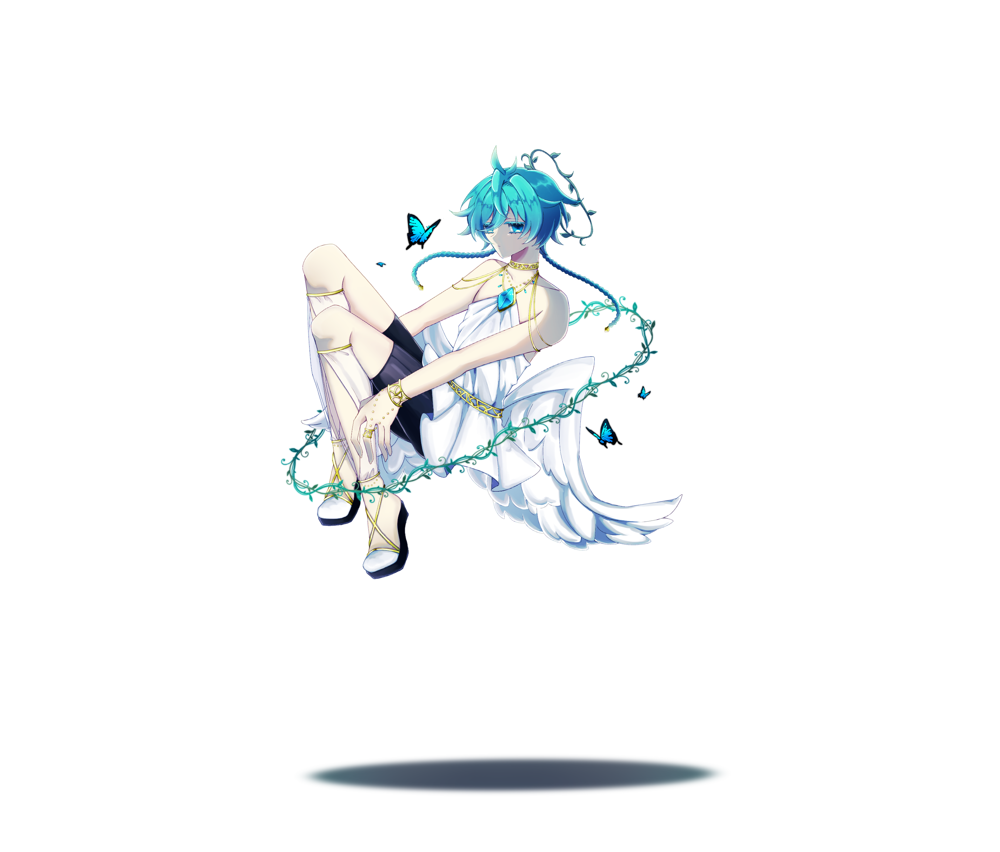
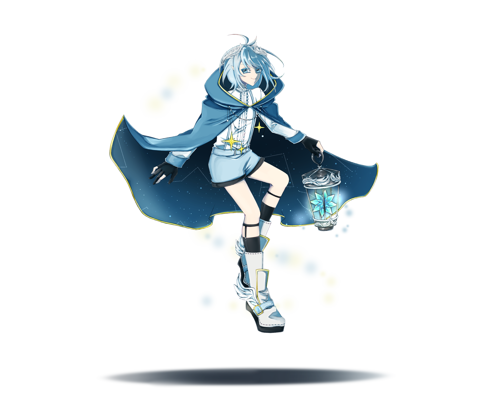
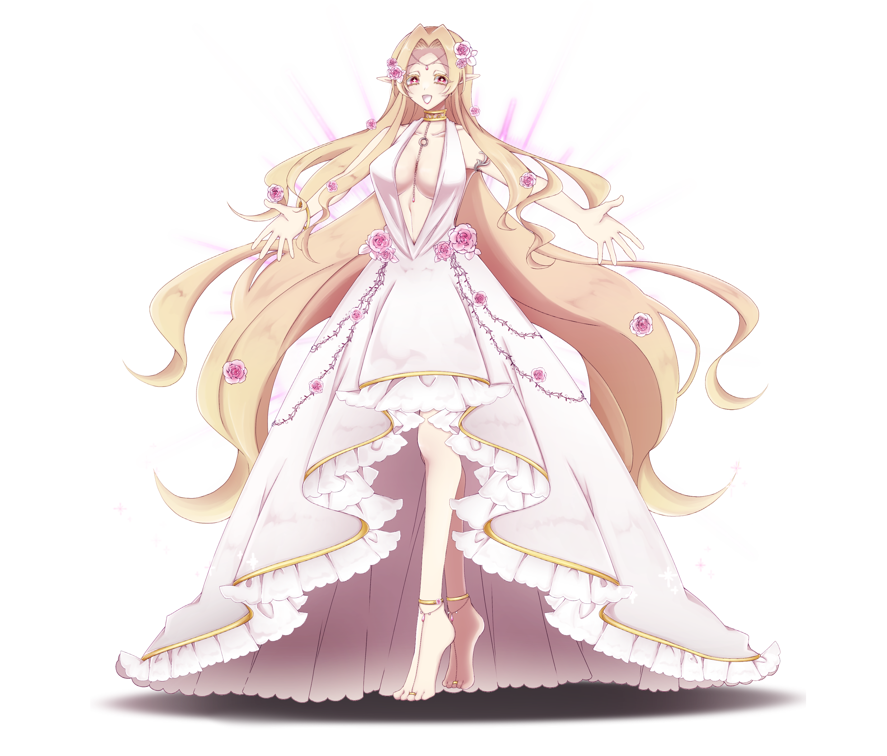
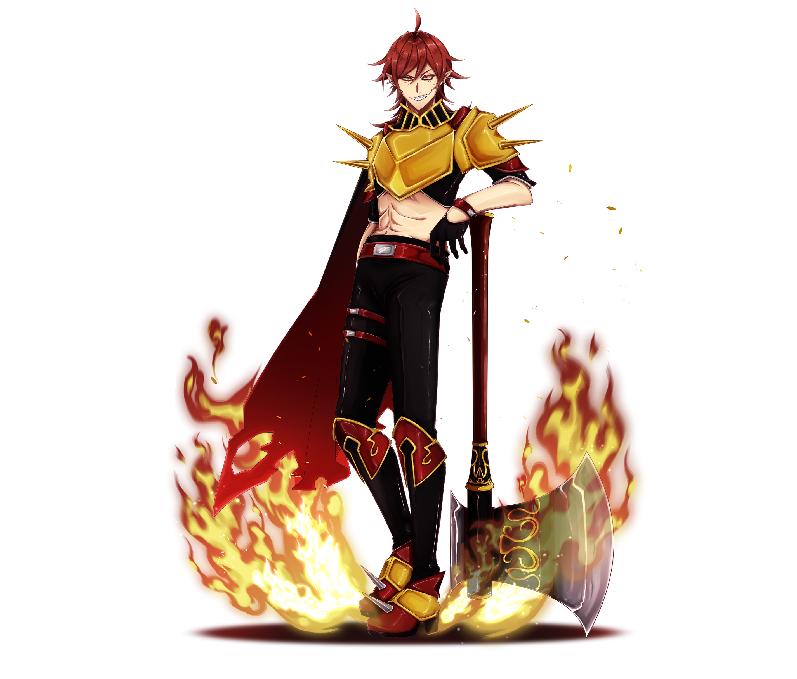
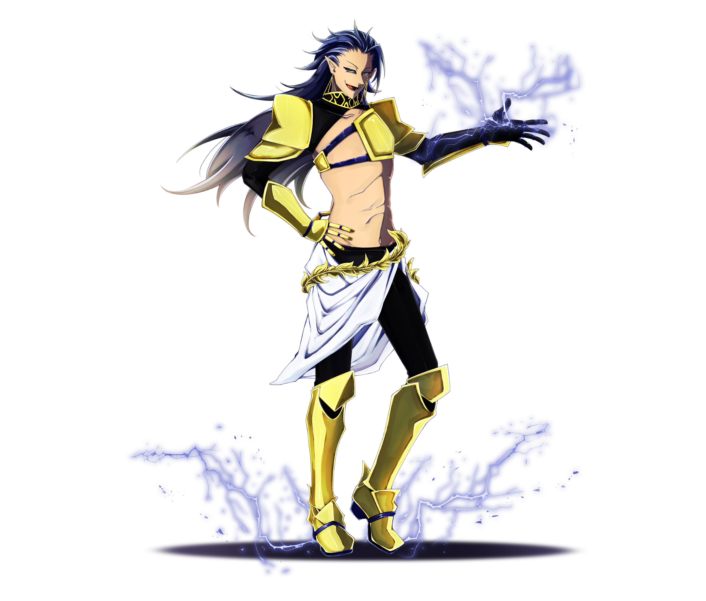
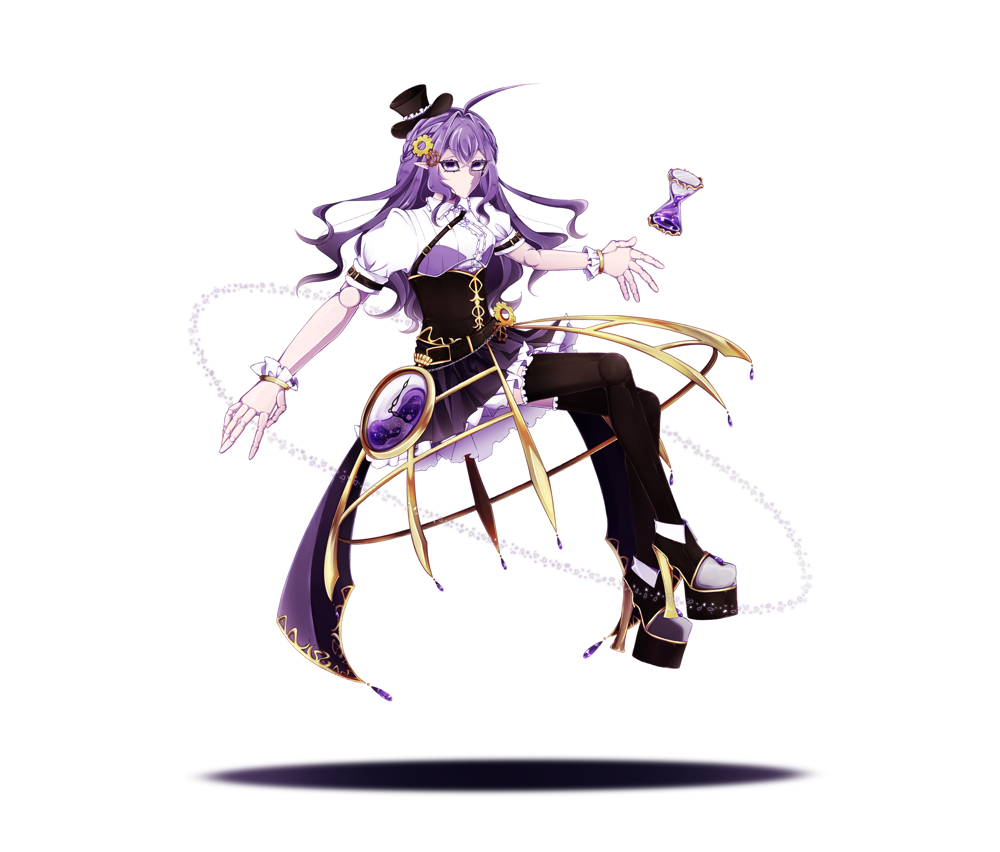
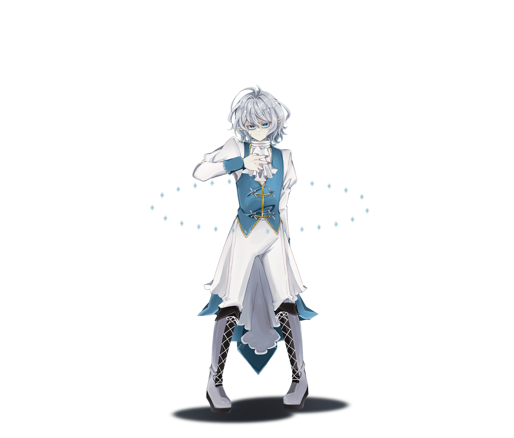
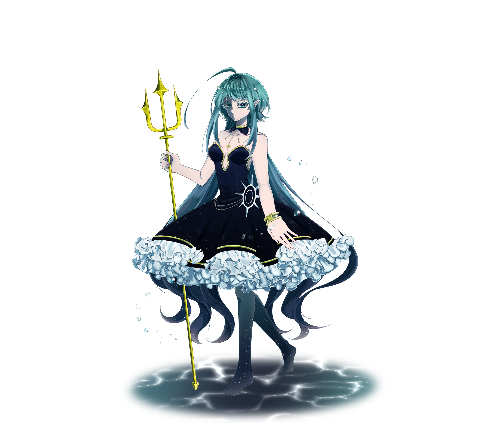
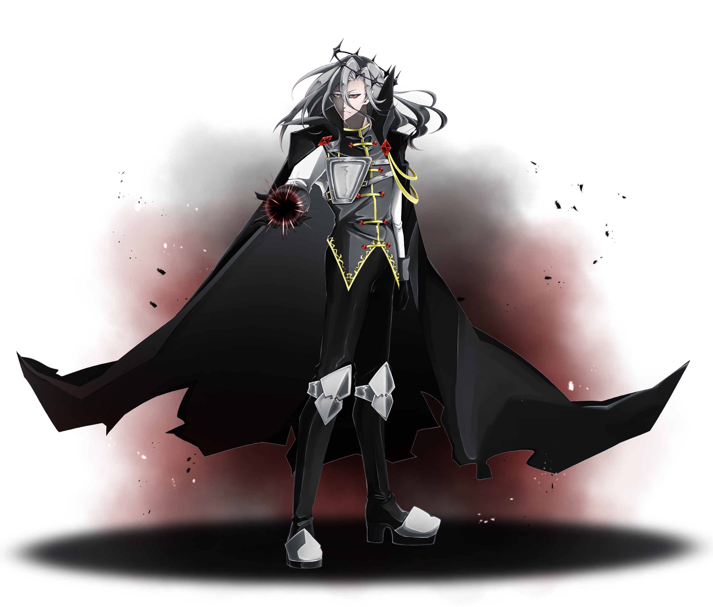

太陽系を中心としたオリジナルの天体擬人化イラストをご覧ください
精霊である擬人化たちは、唯一神(太陽)の使者である。
彼らはそれぞれ、神から与えられた特殊な力を司る。
フォルトゥナルムと呼ばれる3国は、
他の精霊たちより後に信仰し始めた
3人の王が所属する同盟である。

役職：調停者
性別：無
年齢：約45.4億歳
象徴：生命・調和・青き星
元天体：地球(Earth)
神(太陽)の影響を1番受けている存在。
全てに対して中立の立場におり、
調停者としての役割を持つ。
感情があまり表に出ず、言葉遣いが独特。

役職：使者
性別：男寄り
年齢：約45億歳
象徴：通信・速度・機転
元天体：水星(Mercury)
神(太陽)の側近であり、
メッセンジャーとしての役割を担う。
明るく外交的で、誰にでも友好的な少年のような精霊。

役職：育み手
性別：女寄り
年齢：約45億歳
象徴：愛・美・恵み
元天体：金星(Venus)
誰に対しても我が子のように接する。
おっとりとした性格で、面倒見が良い。
優しく包容力があり、時には甘やかしすぎる面も。

役職：烈士
性別：男寄り
年齢：約45.7億歳
象徴：情熱・闘志・火
元天体：火星(Mars)
戦闘力が高い熱血漢の戦士。
考えるより行動する性格で、仲間思いの兄貴肌。
情に厚く、意外と面倒見もよい。

役職：支配者
性別：男寄り
年齢：約46億歳
象徴：拡大・威厳・守護
元天体：木星(Jupiter)
雷を司る、威厳のある支配者。
常に堂々としており、傲慢で責任感が強い。
貴族的な口調で話す。

役職：刻み手
性別：女型オートマタ
年齢：約45.5億歳
象徴：時間・秩序・機構
元天体：土星(Saturn)
時を司るオートマタの身体を持つ。
思考や口調が哲学的で、不思議な雰囲気を放つ。
創り物の身体の為、表情がない。

役職：秩序の国の王
性別：無(男寄り)
年齢：約45.1億歳
象徴：革新・孤高・知性
元天体：天王星(Uranus)
フォルトゥナルムのリーダー的存在であり、
秩序の国の王。氷の貴公子とも呼ばれている。
冷静沈着で合理的だが、周りに振り回されることも多い。

役職：神秘の国の女王
性別：女寄り
年齢：約44.5億歳
象徴：夢・深淵・直感
元天体：海王星(Neptune)
神秘の国の女王として、海を司る。
近寄りがたい雰囲気を持つミステリアスな存在。
気品のある口調で、優雅で美しい。

役職：追放された影の国の王
性別：男寄り
年齢：約44億歳
象徴：影・秘密・再生
元天体：冥王星(Pluto)
闇に近すぎる為、神から追放された影の王。
自信家で強がりだが、実は孤独を感じている。
芝居がかった口調で話す変わり者。